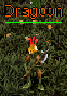

Darkwoods
- 1.
- 2.
- 3.
- 4.
- 5.
- 6.
- 7.
- 8.
- 9.
- 10.
- 11.
- 12.
- 13.
- 14.
- 15.
Whisperdale Quest
Knight of Whisperdale
| Difficulty | Skills |
|---|---|
| Apprentice | Combat |
| NPC Quest Start | Monster | Reward |
|---|---|---|
| Lord Vezryl | Many different creatures |


|
Speak to Lord Vezryl he will not speak to those not aligned with Whisperdale. You must speak with the Whisperdale Steward. He is located next to the spawn gate. Welcome to Whisperdale, the grand capital of Darkwood Forest and home to the Night Elves! I'm so glad you decided to pay a visit to Whisperdale after all. The orcs can be, well rough around the edges. *He bows with a flourish* I am humble Steward of Whisperdale. I watch over the city and tend to its needs. Do you know much about our people? *He clears his throat* We are the Night Elves, also know as the Astari. The city is still...recovering....from the Rune War. It's nothing major, but we could use a hand here or there. Therefore, Vezyl asked me to recruit some visitors to our cause. We can bestow a great gift on you if you decide to help us. 1 extra orb of Dexterity! *He whispers* You'll be able to obtain 101 orbs in Dexterity. There's really no choice, considering the alternativs... However, once you decide, you cannot change your mind. Choose wisely... Do you wish to align with our city? If you chose to you will be rewarded.
- You have gained the dexterity of Krog
- You have gained 500 faction with the city of Whisperdale!
- 2,750 Experience Pool experience may very
Speak to Lord Vezryl, Greetings! Ah.. A loyal servant of Whisperdale... The times are dire, the forces of evil are threatening our fair city. Lotor and his Knights are doing the best they can, but I fear it is not enough. Forthe future of Whisperdale I need a brave warrior to seek out and slay the foul creatures that plague us.. Are you willing to help? Accept his offer to continue. Whisperdale be praised! The task at hand is most dangerous! The nobles and I are convinced that Talazar himself is responsible for the calamitous creatures which haunt our shaded woods! Knowing this, do you still dare stand against this Dark Fiend? Accept to start the quest. Very good! May Whisperdale be saved... It appears you are a ___ adventurer. The task I will give you will test your courage and wisdom. Return to me after Talazar's power has been weakended!
QUEST RECEIVED: Knight of Whisperdale, Lord Vezryl of Whisperdale asks you to slay x amount of Creatures. Head out and kill the required creatue. You will be updated as you kill them. QUEST UPDATE: Kill x amount more creature for Lord Vezryl of Whisperdale
QUEST UPDATE: Knight of Whisperdale, Return to Lord Vezryl in Whisperdale!
Whisperdale be praised! You have made the elfen lands more secure from the evil plague... Talk to Lady Vezryl at our lodge about further rewards for your service. It is a short journey north from Whisperdale. Thank you again.
You have gained faction with Krog for your heroic work! See Lady Targon of Maraket about a reward.
- You have gained X amount of faction with the city of Whisperdale
- Ramdon Amounts Experience Pool experience may very
 Follow the path north to Lord Vezryl Estate and Speak to Lady Vezryl. Greetings loyal warrior of Vezrl... Honored servant. Here is your reward for your loyal patronage. Continue to serve.
Repeat this quest gaining Faction Points to earn the complete Whisperdale Set.
Follow the path north to Lord Vezryl Estate and Speak to Lady Vezryl. Greetings loyal warrior of Vezrl... Honored servant. Here is your reward for your loyal patronage. Continue to serve.
Repeat this quest gaining Faction Points to earn the complete Whisperdale Set.
- 500 Faction Points Necklace of Whisperdale
- 800 Faction Points Ring of Whisperdale
- 1300 Faction Points Bracers of Whisperdale
- 1800 Faction Points Belt of Whisperdale
- 2300 Faction Points Helm of Whisperdale
- 2800 Faction Points Boots of Whisperdale
- 3300 Faction Points Cloak of Whisperdale
- 3800 Faction Points Guardian of Whisperdale
- 4300 Faction Points Leggings of Whisperdale
- 4800 Faction Points Armor of Whisperdale
Quest Complete
A Shadow Roams the Lands
| Difficulty | Skills |
|---|---|
| Apprentice | Combat |
| NPC Quest Start | Reward |
|---|---|
| Varios |

|
Speak to Varios, He ask you what brings you to Whisperdale. *Before you can anwser he cuts you off* Hopes its not for hunting. Undead creatures called shadows stalk the hunting grounds.
Lord Vezryl's Estate. It was fine shady forest and wooded vale teeming with full fleshed deer. Now you'd be lucky to take a scrawny doe, much less a stag. He often daydreams that he could visit again. You accect to hunt the Shadows for him.
QUEST RECEIVED: A Shadow Roams the Lands, Eliminate 25 Shadows for Varios of Whisperdale.
Journey on the road leading out of the city. Continue north at the fork to Lord Vezryl's Estate. West from there you will find foul apparitions to slake you courage.
 Once you find them kill 25 of them. You will be updated as you kill them. You've killed 25 Shadows for Varios. When you have slain 25 return to Varios.
Once you find them kill 25 of them. You will be updated as you kill them. You've killed 25 Shadows for Varios. When you have slain 25 return to Varios.
QUEST RECEIVED: A Shadow Roams the Lands, Return to Varios with news of the Shadow extermination!
He is suprised that you accomplished this task. You have proven him wrong. He will soon venture to the lodge to meet his friend Burslord. They have been planning a trip for some time. He thanks you with a trifle of gold.
- Gold Received: 2,500
- 27,500 Experience Pool experience may very
Varios can now venture to Lord Vezryl's estate! He paid you handsomely.
Quest Complete
Time for Revenge
| Difficulty | Skills |
|---|---|
| Apprentice | Combat |
| NPC Quest Start | Reward |
|---|---|
| Varios |
|
After completeing A Shadow Roams the lands speak to Varios, to the east lies a hive of termigons. He was helping his friend Burslord to collect some material for a project
when their queen fled with his timepiece and buried it among the mounds. He is curious whether you can kill the Termigon Queen and rturn his timepiece.
QUEST RECEIVED: Time for Revenge, Find the termigon hive, destroy the Queen, reclaim Varios' time piece.
Head east across the river then south around the mountain. This is the Termigon hive. Find the Termigon Queen
with in this area and kill it. There is a chance you won't find the timepiece when you kill the queen You search the body, but don't find anything.
QUEST UPDATE: Time for Revenge, You found Varios's Timepiece! Return it to him in Whisperdale.
It would be quite rude fi there was no compensation for your efforts. You must visit the hunting lodge and speak with my friend Burslord. He is eager to meet you and see if I have been truthful.
- Gold Received: 5,000
- 38,500 Experience Pool experience may very
You havce earned Varios respect and his gold. He commends you to Burslord.
Quest Complete
Termigon Armor
| Difficulty | Skills |
|---|---|
| Apprentice | Combat |
| NPC Quest Start | Reward |
|---|---|
| Burslord | "> |
 After completeing time for revenge speak to Burslord at the hunting lodge, Varios in Whisperdale speaks very highly of you. Perhaps you can return to the Termigon hive and do me a service as well.
I am working on a new very strong material to be used in the crafting of armor. The material is only found in the stomach lining of some Termigon Warriors around the hive to the south. Return to the hive and retrieve 20 stomach linings for my work.
After completeing time for revenge speak to Burslord at the hunting lodge, Varios in Whisperdale speaks very highly of you. Perhaps you can return to the Termigon hive and do me a service as well.
I am working on a new very strong material to be used in the crafting of armor. The material is only found in the stomach lining of some Termigon Warriors around the hive to the south. Return to the hive and retrieve 20 stomach linings for my work.
- OPTION: 1 This sounds too messy....
- OPTION: 2 I am too tired to help...
- OPTION: 3 I am too hungry to assist you right now...
OPTION: 1
Nonsense. There is usually nothing in the stomachs! They regurgitate it to their horrid little larval spawn. Oh, what was I saying? Yes... to remove the lining simply cut a small hole in the stomach once you remove it... It falls out in one whole piece. Fascinating, isn't it?
OPTION: 2
Traveling does make one weary, doesn't it? Ahhh... It is as if I am living my youthful days again! I remember the exhaustion well... Here. Have some pie. Mother never sent me without it! I will see you back soon with those stomach linings, yes?
- ITEM RECEIVED: Apple Pie Slice
OPTION: 3
Well, we can't have you off adventuring on a nempty stomach! *He produces a steaming bowl of beef stew* There now, this should help. I will see you back soon with those stomach linings, yes?
- ITEM RECEIVED: Beef Stew

QUEST RECEIVED: Termigon Armor, Collect 20 stomach linings of Termigon Warriors for Burslord, a huntsmand who lives east of Autumn.
Head south back to the Termigon Hive and kill Termigon Warriors.
 You will need to kill more then 20, casue you will get a dialogue that says.
You try to remove the stomach lining, but it shreds to pieces.. When you have successfully removed a stomach you will be updated. You've collected 20 stomach linings for Burslord!
You will need to kill more then 20, casue you will get a dialogue that says.
You try to remove the stomach lining, but it shreds to pieces.. When you have successfully removed a stomach you will be updated. You've collected 20 stomach linings for Burslord!
QUEST UPDATE: Termigon Armor, you've collect enough material. Return to Burslord at the Hunting Lodge.
With these Termigon stomach linings he can fashion many pairs of armored gloves! Take these prototype mittens as a reward for your fine service! Now, rest awhile at our fine lodge...
- ITEM RECEIVED: Termigon Battle Mittens
- 44,000 Experience Pool experience may very
Quest Complete
Burslord gave you Termigon Battle Mittens.Correspondence
| Difficulty | Skills |
|---|---|
| Apprentice | Traveling |
| NPC Quest Start | Reward |
|---|---|
| Jarkam |
|
Speak to Jarkam, I must get this note to the miner in Fort Eastwatch. Deliver it to him and he will pay you well... Ask him why The ore from Krythan island is superio to that found on our native soil, the Darkwoods. I want to make a deal with the miner to purchase his ore so I can sell it here. Between you and me, it would not be a small markup. If only i was able to travel there myself... but I cannot. The portal magic is strong and leaves me feeling quite ill. Say that you will deliver his note for a small markup.. Splendid! Things are going just as planned... Here is your payment do not abuse my trust! Go at once.
- GOLD RECEIVED: 250
QUEST RECEIVED: Correspondence, Jarkam of Whisperdale paid you to deliver a note to the Dalvon Miner at Fort Eastwatch.
 Travel to LSP portal, then to Silvest Portal at LSP. Travel all the way to the eastside to Fort Eastwatch. There you will find the Dalvon Miner. Talk to him to give him the note.
WHAT? He thinks he can buy my ore at such a low price? If he only knew the problems I have at the mine!
Travel to LSP portal, then to Silvest Portal at LSP. Travel all the way to the eastside to Fort Eastwatch. There you will find the Dalvon Miner. Talk to him to give him the note.
WHAT? He thinks he can buy my ore at such a low price? If he only knew the problems I have at the mine!
- 16,500 Experience Pool experience may very
Quest Complete
You delivered a note to the Dalvon Miner.Foul Beasts
| Difficulty | Skills |
|---|---|
| Apprentice | Combat |
| NPC Quest Start | Reward |
|---|---|
| Periza |
">
|
 Speak to Periza, You're new here aren't you? Have you ever heard of Wargs? Foul beasts they are... Several of them came into town and devoured my chickens. If you would be so kind as to venture into the wilderness and extract some
vengeance for me I would be most grateful. Answer: "They are MOST foul! I will hunt them. MOST foul, indeed. I might have a nice reward waiting for you if you do the job well...
Speak to Periza, You're new here aren't you? Have you ever heard of Wargs? Foul beasts they are... Several of them came into town and devoured my chickens. If you would be so kind as to venture into the wilderness and extract some
vengeance for me I would be most grateful. Answer: "They are MOST foul! I will hunt them. MOST foul, indeed. I might have a nice reward waiting for you if you do the job well...
QUEST RECEIVED: Foul Beasts, Wargs near Whisperdale are eating Periza's chickens! Hunt 50 of them..
You have to kill the Wargs in a cretin location within the DarkWoods. If you speak to her again she will give you the hint of were to find them.
A pack of wargs live in the mountains to the northeast. They come down to feast on my birds when their game is poor. From what I overheard at the tavern; hunters say they prefer the flesh of brown bear cubs. Maybe if you kill a few of those, the wargs will catch the sent
and show themselves...
 Follow the road to the north at the fork head northeast. This area around the south side of the mountain you can find Wargs, and brown bears to kill to get them to spawn more offten. As you kill them you will be updated QUEST UPDATE: You've killed 50 wargs for Periza.
Follow the road to the north at the fork head northeast. This area around the south side of the mountain you can find Wargs, and brown bears to kill to get them to spawn more offten. As you kill them you will be updated QUEST UPDATE: You've killed 50 wargs for Periza.
QUEST UPDATE: Foul Beasts, Return to Periza in Whisperdale.
Return to Periza; I haven't seen a warg around here in ages! You took care of the problem... Here is the reward I promised.
- GOLD RECEIVED: 500 Gold
- ITEM RECEIVED: Warg Eye Amulet
- 11,000 Experience Pool experience may very
Quest Complete
Periza gave you gold and a Warg Eye Amulet for protecting her flock.Search for Jhulara
| Difficulty | Skills |
|---|---|
| Apprentice | Searching |
| NPC Quest Start | Reward |
|---|---|
| Zarowyn | EXP |
If you have spoken to Jhulara you would be doing the Quest A Message for Zarowyn.
 Speak to Zarowyn, To start this quest you need to chose Places of death? Aye! Places of death! How else to come to the gate but by dying? We wait for loved ones, hoping to see them again, yet hoping against hope
that thye never make the journey that takes them through the gate. For if we greet them again at the gate, it is only becasue they have died. and so I watch for my daughter, hoping to hold her again, and hoping that she does not come through that gate for to do so, she must first die.
Your Daughter? Aye, my child Jhulara. She set off many days ago. finding her fortune, as all young ones do. I wonder... You look to be a wanderer. Would you... Could you see it fair to be letting me know if you find her in your travels? Aye, I could do that.
I thank thee, friend! I will anxiously await news of her, if she is well and happy or otherwise. Have no fear to bring me a bad report. it is better than not knowing.
Speak to Zarowyn, To start this quest you need to chose Places of death? Aye! Places of death! How else to come to the gate but by dying? We wait for loved ones, hoping to see them again, yet hoping against hope
that thye never make the journey that takes them through the gate. For if we greet them again at the gate, it is only becasue they have died. and so I watch for my daughter, hoping to hold her again, and hoping that she does not come through that gate for to do so, she must first die.
Your Daughter? Aye, my child Jhulara. She set off many days ago. finding her fortune, as all young ones do. I wonder... You look to be a wanderer. Would you... Could you see it fair to be letting me know if you find her in your travels? Aye, I could do that.
I thank thee, friend! I will anxiously await news of her, if she is well and happy or otherwise. Have no fear to bring me a bad report. it is better than not knowing.
QUEST RECEIVED: Search for Jhulara, Find Jhulara for Zarowyn of Whisperdale.
Follow the road east then just north. You will find Autumn. She is right in the middle of town. Speak to her. Greetings! I hope you're well this fine day. *Jhulara smiles kindly at you* Tis a fine day for travelling. Are you on the way to Lord Vezryl's Estate or the hunting lodge? Or perchance to Whisperdale?
Whisperdale Whisperdale! Indeed! I do wonder how my father doth fare these days. *She looks wistfully south, as though trying to focus on something too far away to see* *You tell Jhulara that her father is looking for her* You've already seen him then? But that's excellent!
Please return to him with news of me, or my good health. I know it will set his mind at rest.
QUEST RECEIVED: Search for Jhulara, Bring good news to Zarowyn of Whisperdale that Jhulara is well.
Follow the road southwest back to Whisperdale and find Zarowyn near the spawn gate. *You give Zarowyn the message that Jhulara is well and in Autumn* You've seen her then? Gods be praised! And she's well! My thanks to you, friend, for this happy news! *Zarowyn shakes your hand and wanders away muttering happily to himself and nodding his head*
- 1,100 Experience Pool experience may very
Quest Complete
You have brought much happiness to Jhulara and ZarowynA Message for Zarowyn
| Difficulty | Skills |
|---|---|
| Apprentice | Searching |
| NPC Quest Start | Reward |
|---|---|
| Jhulara | EXP |
If you have spoken to Zarowyn you would be doing the Quest Search for Jhulara.
Speak to Jhulara, Greetings! I hope you're well this fine day. *Jhulara smiles kindly at you* Tis a fine day for travelling. Are you on the way to Lord Vezryl's Estate or the hunting lodge? Or perchance to Whisperdale?
Whisperdale Whisperdale! Indeed! I do wonder how my father doth fare these days. *She looks wistfully south, as though trying to focus on something too far away to see* I would ask you a favor, friend if you are going to Whisperdale,
couldst thou pleas find my father, Zarowyn and tell him that I am here; that I am well? It would do much to ease my heart and also, I think, his. Please give him my message... Indeed m'lady, I would be happy to assist you.
Thank you, a thousand times over, for this favor you do me!
QUEST RECEIVED: A Message for Zarowyn, Tell Zarowyn of Whisperdale that Jhulara is in Autumn and is doing well.
Follow the road southwest back to Whisperdale. Speak to Zarowyn, *You give Zarowyn the message that Jhulara is well and in Autumn* Jhulara sen you to find me? Gods be praised! And she's well! My thanks to you, friend, for this happy news!
Tis true, it grieved my spirit. Worry never left my mind. Children will never understand the love of a parent until they themselves bring a life into the world. *Zarowyn shakes your hand and wanders away muttering happily to himself and nodding his head*
- 1,155 Experience Pool experience may very
Quest Complete
You have delivered Jhulara's message to her father ZarowynLoyal
| Difficulty | Skills |
|---|---|
| Apprentice | Combat |
| NPC Quest Start | Reward |
|---|---|
| Zerev |

|
 Speak to Zerev, Oh, hello... *The boy stares solemnly at you* You do not look like you are from here. i'm from across the sea. Ho? I wish I could go across the sea... It is so sad here. The ones that die want
to stay dead but rise again. The ones taht we want to see again we cannot bring back. What do you mean? My dog Allie died. She got bit by a black adder, and we couldn't save her. *His lip quivers* Father said we canot pay the mage to resurrect her.
It costs too much and our leather shop does not make good coin. *He bites his lip* So we buried her out in the woods with the other pets. By now she is probably wandering the woods as a skeletal pup. Could you find her? I know she's gone, but I hate to think of her hurting people.
Of course. I will find the dog. Thank you... Just look for one with a collar. She found something one day digging outside of town, so I hung it on her neck.
Speak to Zerev, Oh, hello... *The boy stares solemnly at you* You do not look like you are from here. i'm from across the sea. Ho? I wish I could go across the sea... It is so sad here. The ones that die want
to stay dead but rise again. The ones taht we want to see again we cannot bring back. What do you mean? My dog Allie died. She got bit by a black adder, and we couldn't save her. *His lip quivers* Father said we canot pay the mage to resurrect her.
It costs too much and our leather shop does not make good coin. *He bites his lip* So we buried her out in the woods with the other pets. By now she is probably wandering the woods as a skeletal pup. Could you find her? I know she's gone, but I hate to think of her hurting people.
Of course. I will find the dog. Thank you... Just look for one with a collar. She found something one day digging outside of town, so I hung it on her neck.
QUEST RECEIVED: Loyal, Zerev's dog is now wandering the woods near Whisperdale as a skeletal pup. Put her to rest.
 Venture out of Whisperdale to the northwest near the coast. There is a small random spawn of Skeletal Pups you may have to kill other monsters to get them to spawn. When you start to kill them you will be updated with a message. This Skeletal Pup doesn't have anything on its neck...
When you do kill the correct one you will be updated. QUEST UPDATE: A large totem hangs around this Skeletal Pup's neck. It must be Zerev's dog Allie.
Venture out of Whisperdale to the northwest near the coast. There is a small random spawn of Skeletal Pups you may have to kill other monsters to get them to spawn. When you start to kill them you will be updated with a message. This Skeletal Pup doesn't have anything on its neck...
When you do kill the correct one you will be updated. QUEST UPDATE: A large totem hangs around this Skeletal Pup's neck. It must be Zerev's dog Allie.
QUEST UPDATE: Loyal, You found what was left of Zerev's dog Allie. Return to him in Whisperdale..
You did find her, after all... I was hoping you wouldn't, but that thing around her neck - that proves it. You keep it. It reminds me of her too much.
- ITEM RECEIVED: Totem of the Wolf Pup
- 22,000 Experience Pool experience may very
Quest Complete
You found Zerev's dog Allie, resurrected as a Skeletal Pup. He gave you her Totem of the Wolf Pup.Riddles
| Difficulty | Skills |
|---|---|
| Apprentice | Searching |
| NPC Quest Start | Reward |
|---|---|
| Rydyl |

|
 Speak to Rydyl, Hello! Did you see any spiders on the way in? There are a lot of spiders around here. They're creepy! Would you like to hear my riddle? Yes, please, I'd love to! Stronger than steel, Lighter than air; Stolen from monsters to make elves fair. What am I?
Bring me the answer, and I'll give you a prize!
Speak to Rydyl, Hello! Did you see any spiders on the way in? There are a lot of spiders around here. They're creepy! Would you like to hear my riddle? Yes, please, I'd love to! Stronger than steel, Lighter than air; Stolen from monsters to make elves fair. What am I?
Bring me the answer, and I'll give you a prize!
QUEST RECEIVED: Riddles, Rydyl of Autumn will give you a prize if you solve his riddle.
The answer to the riddle is Raw Silk.  You can buy from a store or kill the Black Widow Hatchling in the area.
When you take the Raw Silk to Rydyl you must drag and drop the Raw Silk on him. If you talk to him he will tell you the riddle again. You found the key to the riddle! Now you get Rydyl's key lime! *Rydyl tosses you a lime, giggles and runs away*
You can buy from a store or kill the Black Widow Hatchling in the area.
When you take the Raw Silk to Rydyl you must drag and drop the Raw Silk on him. If you talk to him he will tell you the riddle again. You found the key to the riddle! Now you get Rydyl's key lime! *Rydyl tosses you a lime, giggles and runs away*
- ITEM RECEIVED: Lime
Quest Complete
Rydyl gave you limes in exchange for the raw silk. This quest is repeatableNoisy Neighbors
| Difficulty | Skills |
|---|---|
| Adept | Combat |
| NPC Quest Start | Reward |
|---|---|
| Vesos |

|
 Speak to Vesos, Hail young adventurer! Enjoying your travels in the land of the Astari? Say, if you aren't too busy, can you help a friend of the land? He is an old fisherman human that resides in the Darkwoods. He has told me that he has been haveing trouble fishing lately. It's mostly due to the Lizardman stronghold on the coast. Could you please go to him?
Just follow the coast north from Whisperdale. Go past the Lizardmen until you find a dock. You will find him there. His name is Old Gerald. Please help him.
Speak to Vesos, Hail young adventurer! Enjoying your travels in the land of the Astari? Say, if you aren't too busy, can you help a friend of the land? He is an old fisherman human that resides in the Darkwoods. He has told me that he has been haveing trouble fishing lately. It's mostly due to the Lizardman stronghold on the coast. Could you please go to him?
Just follow the coast north from Whisperdale. Go past the Lizardmen until you find a dock. You will find him there. His name is Old Gerald. Please help him.
QUEST RECEIVED: Noisy Neighbors, Talk to Old Gerald, north of Whisperdale and the Lizardmen.
 Old Gerald is located on the west coast, best way to find him is to follow the road north then head west right be for you get to Vezryl Estate. He is on the dock. Hello sir, or is it Lady? I can't qite tell... Well no matter. Have you come here to fish? Good luck! I haven't had a bite in ages. Those stinkin Lizardmen are eating all the fish. I moved to this area to enjoy the peace and quiet.
And now I have to deal with those scale covered Muckstompers. Say, could you go and rough up their dwelling? Scare them out of the place so I can fish again. Tere should be 5 Lizardmen Totems located down there. I had a chance to go there and deface 10 of them already. I just need help finishing the task. Consider it done, I hate those lizards too!
*He slaps you on the back* Hee Hee! Well don't let me keep you waiting. Just head south of here to find their camp.
Old Gerald is located on the west coast, best way to find him is to follow the road north then head west right be for you get to Vezryl Estate. He is on the dock. Hello sir, or is it Lady? I can't qite tell... Well no matter. Have you come here to fish? Good luck! I haven't had a bite in ages. Those stinkin Lizardmen are eating all the fish. I moved to this area to enjoy the peace and quiet.
And now I have to deal with those scale covered Muckstompers. Say, could you go and rough up their dwelling? Scare them out of the place so I can fish again. Tere should be 5 Lizardmen Totems located down there. I had a chance to go there and deface 10 of them already. I just need help finishing the task. Consider it done, I hate those lizards too!
*He slaps you on the back* Hee Hee! Well don't let me keep you waiting. Just head south of here to find their camp.
Go back to the east then just south across the bridge to the Lizardmans camp. There are lots of Lizard Totems but you have to find the 5 that still need defaceing. The map attached has the coordinates of all 5 totems. When you find one you will be updated QUEST UPDATE: You have defaced one of the five Lizardman Totems for Old Gerald. When you find the final one you will be updated.
QUEST UPDATE: Noisy Neighbors, Return to Old Gerald about the totems.
Thank you for defaceing those totems! Maybe they will see it as a sign to leave. Then I can finally fish in peace. Take this item as a token of my appreciation!
- ITEM RECEIVED: Worn Guard Halfplate
- 5,500 Experience Pool experience may very
Quest Complete
Gerald can now fish in peace! He gifted you with a Worn Guard Halfplate.Astari Supplies
| Difficulty | Skills |
|---|---|
| Adept | Combat |
| NPC Quest Start | Reward |
|---|---|
| Lord Solfein |
">
|
You must be an Astari to do this quest. If you are not an Astari the guard will tell you that area is only open to official Astari Guard Personnel.
The Astari Shelter is located northeast of Autumn. You can follow the road north then east past the last river to the last rock formation to the north. You can also take the land bridge go all the way to the coast then north past the first two rock formations to the thrid one.
When you try to enter the steel door in the next room the guard will say; That area is only open to official Astari Guard Personnel If you want to get in, you'll have to join The Guard.
QUEST RECEIVED: Astari Supplies, Talk to Lord Solfein in Autumn to join the Guard.
 Return to Autumn to speak to Lord Solfein, Greetings. Have you come to inquire about the guard position at the underground shelter? Yes, I'd like to join the Astari Guard Lord Solfein looks you over.
Thank you for volunteering. Here are your commission papers. Return to the shelter, and report to Captain Laulban for your orders. And be careful - you're the fourth new recruit they've asked for this week.
Return to Autumn to speak to Lord Solfein, Greetings. Have you come to inquire about the guard position at the underground shelter? Yes, I'd like to join the Astari Guard Lord Solfein looks you over.
Thank you for volunteering. Here are your commission papers. Return to the shelter, and report to Captain Laulban for your orders. And be careful - you're the fourth new recruit they've asked for this week.
QUEST UPDATE: Astari Supplies, Report to Captain Laulban in the Astari Shelter
Return to the shelter and speak to Captain Laulban, So, you're the new recruit, eh? Very well. What are my duties? Your duties here are simple. The supplies and records in these chambers have been stored for the Astari people in case of an emergency, such as a second Rune War.
Our job is to protect them. We've been facing an infestation of poisonous green triddles lately. They come up through a trap door, way in the back of the shelter. Not the one just west of here - that goes down to the sewers. We're not sure where the one in the back leads. The vermin can't get in if the trap door stays closed, but some of these recruits are.. shall we say... forgetful.
So every once in a while the triddles get in and go after the supp,ies. And evey once in a while one of the recruits doesn't come back. We have to keep the trap door closed, and that is your first assignment. Follow this corridor to its end. The trap door is in the last room. Exterminate any insects that have come through. Be sure to check the lock on the trap door, and clse it if it's open. Then report back to me.
QUEST UPDATE: Astari Supplies, Check the trap door in the supply room
Go out and around to the south of the Captains office all the way to the west to the last door. There should be a few insects running around in the hallway. Spiders, or Green Triddles. Kill them then enter the room and close the trap door in the floor. You will be updated again.
QUEST UPDATE: Astari Supplies, Report to Captain Laulban in the Astari Shelter.
I'm glad to see you back in on piece, recruit. What do you have to report? I found the trapdoor. It was open, so I closed it. Good work. I'm glad to see that you can handle yourself, soldier. I have another assignment for you; Lord Malgoth over in Dunmarrow has asked us to send him certain documents from our files. Apparently, this shelter held the last remaining copy. I sent your predecessor to get them
, but like so many others, he never returned. The documents are filed away in a foot chest, in the room just before the one where the triddles are getting in. Go find these papers and bring them to me. But be careful - there may still be some insects about. Dunmarrow? Where's that? Dunmarrow is an ancient Astari city, beyond the river to the east. They say it survived the ravages of the Rune War because
of a blessing from the goddess Ulthien. I'm afraid I don't know the full story. Anyway, Lord Malgoth's request is legitimate if that's what you're concerned about. Now go.
QUEST UPDATE: Astari Supplies, Retrieve the documents from the footchest in the Astari Shelter.
Just like before head around to the south of the Captains office, go west to the second door and search the footchest in this room. When you search the document you will be updated. *You search the footlocker but find no documents*
QUEST UPDATE: Astari Supplies, Report back to Captain Laulban.
By the scars of Arna! Missing you say? I know what must have happened. As I told you, the recruits we've lost have been disappearing completely. The insects must be dragging them down, through that accursed trap door, to their lair. If I'm to send Lord Malgoth his papers I need a brave and resourceful soldier to go down there and find them. You are the best I've got. Prepare carefully, and feel free to recruit others to help - we don't know what's down there. Find those documents and bring them back to me. Good luck, soldier!
QUEST UPDATE: Astari Supplies, Find the lost documents in the insect lair below the shelter.
The lair is not a very big location, but you can go the wrong way a few times. If you get lost the map has the location were to go. You will encoutner Spiders, Brown Triddles, Green Triddles, Fireflies, and Termigon Warriors. When you reach the last area you will see a decaying corps. Click on it to receive the missing documents.
QUEST UPDATE: Astari Supplies, Papers found. Return to Captain Laulban!
Return to Captain Laulban. Excellent work! I'll have a runner carry these to Lord Malgoth in Dunmarrow immediately. I'm astounded by your account of the tunnel complex that lies beneath us. I'll be writing to Lord Solfein, explaining our need for even more new recruits. You, on the other hand, are too important to be wasted on guard duty. Any recruit off the street can guard these supplies. Very few can brave the perils you have faced. Effective immediately, I'm promoting you to Lieutenant and mustering you out of the Astari Guard.
With your promotion, you've earned The Sash of the Astari Guard. Wear it proudly! Here is your pay. Thanks again Lieutenant, and good luck!
- GOLD RECEIVED: 500
- ITEM RECEIVED: Sash of the Astari Guard
- 2,200 Experience Pool experience may very
Quest Complete
Gerald can now fish in peace! He gifted you with a Worn Guard Halfplate.Sentimental Value
| Difficulty | Skills |
|---|---|
| Adept | Combat |
| NPC Quest Start | Reward |
|---|---|
| Galun | "> |
 Speak to Galun, Hail and well met. Hail, good sir. You look like a 'sturdy' adventurer. Perhaps you could do me a small faovor? Favor? My great-uncle, the honorable Lord Beldan, hasn't been seen for several years. When I last saw him, he was in possession of soemthing of great
sentimental value to me. When he disappeared, he was excavating an old temple near this lodge. I understand the temple is located in the fork of a great river. You should speak with Ursos about it. I believe he has seen it in his travels. Are you interested in helping me? I'm always up for a challenge Good, good. Glad to hear that you are brave.
I have to war you, the temple is rumored to be full of foul beasts. Some of them... *He laughs nervously* ... Of supernatural nature. But of course, who believes rumors these days? The item you are looking for is a great sword with a jewel-encrusted hilt. Return it to me and I will reward you well. Farewell and good luck.
Speak to Galun, Hail and well met. Hail, good sir. You look like a 'sturdy' adventurer. Perhaps you could do me a small faovor? Favor? My great-uncle, the honorable Lord Beldan, hasn't been seen for several years. When I last saw him, he was in possession of soemthing of great
sentimental value to me. When he disappeared, he was excavating an old temple near this lodge. I understand the temple is located in the fork of a great river. You should speak with Ursos about it. I believe he has seen it in his travels. Are you interested in helping me? I'm always up for a challenge Good, good. Glad to hear that you are brave.
I have to war you, the temple is rumored to be full of foul beasts. Some of them... *He laughs nervously* ... Of supernatural nature. But of course, who believes rumors these days? The item you are looking for is a great sword with a jewel-encrusted hilt. Return it to me and I will reward you well. Farewell and good luck.


 This temple is not to hard to navigate. I have marked the location of the Sea chest where the Gem Encrusted Hilt is located. There are plenty of enemies to fight though Cultist(9), Fighter(19), Skeletal Apprentice(8), Zombie(13), Small Skeleton(5), Shadow(17), Skeletal Warriors(17) Ghost(23). Once you reach the Large Sea Chest
This temple is not to hard to navigate. I have marked the location of the Sea chest where the Gem Encrusted Hilt is located. There are plenty of enemies to fight though Cultist(9), Fighter(19), Skeletal Apprentice(8), Zombie(13), Small Skeleton(5), Shadow(17), Skeletal Warriors(17) Ghost(23). Once you reach the Large Sea Chest  open it to spawn Soul of Beldan(10).
open it to spawn Soul of Beldan(10).
 Kill him and you will be updated. QUEST UPDATE: You have found the gem-encrusted hilt of a broken sword The sharp blade of the sword is located on the 3 level down. When you find the next Large Sea Chest. Open it to spawn Body of Beldan(10)
Kill him and you will be updated. QUEST UPDATE: You have found the gem-encrusted hilt of a broken sword The sharp blade of the sword is located on the 3 level down. When you find the next Large Sea Chest. Open it to spawn Body of Beldan(10)  Kill him and you will be updated. QUEST UPDATE: You have found a very sharp blade from a broken sword.
Kill him and you will be updated. QUEST UPDATE: You have found a very sharp blade from a broken sword.
QUEST RECEIVED: Sentimental Value, Return the pieces of the sword to Galun at the Autumn Hunting Lodge .
Travel back to the Hunting Lodge and speak to Galun. Ah... You found it! A pity the sword is shattered. I will take the hilt, as it contains gems of great... ...'sentimental' value to me. As for the blade take it to my personal blacksmith, Sathis in Silvest. He will craft you an item that will be a worthy reward.
QUEST RECEIVED: Sentimental Value, Seek the Blacksmith Sathis in Silvest.
- 5,500 Experience Pool experience may very
 Travel to Silvest and speak to Sathis, Good day! I do hope you're fealing better than I. Old bones do not move as swiftly or as surely as those of the young. I still have my craft, though! Fine blades I can craft yet.
I would speak to you about this blade. Ah- Beldan's blade. You found it then. Excellent. *He turns the blade over in his hands mumbling to himself* Yes, yes, still good material. I can do something with this.
Lord Galun gave you this, i assume, and kept the hilt? He did indeed. He said you could craft something for me as a reward. Excellent. Hold here a bit. I'll be back in two shakes of a dog's tail. *He winks at you and shoffles off* *He returns in a fairly short time and carefully hands you a beautiful dagger*
and here ye be. Thank you for assisting my lord in his quest. May you use the blade in continuing good health, my friend.
Travel to Silvest and speak to Sathis, Good day! I do hope you're fealing better than I. Old bones do not move as swiftly or as surely as those of the young. I still have my craft, though! Fine blades I can craft yet.
I would speak to you about this blade. Ah- Beldan's blade. You found it then. Excellent. *He turns the blade over in his hands mumbling to himself* Yes, yes, still good material. I can do something with this.
Lord Galun gave you this, i assume, and kept the hilt? He did indeed. He said you could craft something for me as a reward. Excellent. Hold here a bit. I'll be back in two shakes of a dog's tail. *He winks at you and shoffles off* *He returns in a fairly short time and carefully hands you a beautiful dagger*
and here ye be. Thank you for assisting my lord in his quest. May you use the blade in continuing good health, my friend.
- ITEM RECEIVED: Razor Bone Dagger
- 8,250 Experience Pool experience may very
Quest Complete
You received a Razor Bone Dagger from Sathis for assisting Lord GalunAdvanced Ranger Training
| Difficulty | Skills |
|---|---|
| Apprentice | Combat |
| NPC Quest Start | Reward |
|---|---|
| Tilis Oakwoven |

|
Speak to Tilis Oakwoven Greetings, traveler. Many come to learn from us elves the secrets of ranged weapons; Are you here to train your eyes and your mind? Yes. What do you require of me? I am a great teacher, indeed, but I will recommend you train with my colleagues. Go forth and search for 6 Elven Ranged Trainers. They are located across the land of Darkwood. Visit Whisperdale, Autumn, Darkwood, and Lord Vezryl's Estate. Return to me once you have completed their training. Perhaps you should start with Silvi Thrushwood. He resides here in fair Whisperdale.
- Short Bow in Whisperdale Sivi Thrushwood
- Long Bow in Vezryl's Estate Ox Juurnuhk
- Small Crossbow in Autumn Ulver Muurnahknahk
- Large Crossbow in Whisperdale Tvistia Llywenen
- Vine Sling in Autumn Umduhk Dumdumuhk
- Vine Staff Sling in Vezryl's Estate Gar-Gar Mootarhk
QUEST RECEIVED: Advanced Ranger Training, Tilis Oakwoven of Whisperdale sent you to search Astari lands for 6 Elven Ranged Trainers.
Return to Tilis Oakwoven You have learned all the ranged combat skills from the trainers! This armor shall now fit you. Stalk the darkwoods, weave among the oaks. There is strength in staying. Stay strong and aid the night elves. *He salutes you*
- Night Elf Archer Cuirass
- 33,000 Experience Pool experience may very
???
Quest Complete
Steady Hand
| Difficulty | Skills |
|---|---|
| Apprentice | Combat 12 Bows |
| NPC Quest Start | Reward |
|---|---|
| Sivi Thrushwood |
 ">
">
|
 Speak to Silvi Thrushwood I see that Tilis has recommended you for Archery training. *He clears his throat* The best thing to remember when practicing Archery is a steady shot. To achieve this, you must still your nerves. It requires complete mastery of yourself.
I can see you are a bit...jumpy. Perhaps a good battle will help you focus. First, let's outfit you with a new bow. Hunt 50 Dragoons with this Oakwoven Short Bow.
Speak to Silvi Thrushwood I see that Tilis has recommended you for Archery training. *He clears his throat* The best thing to remember when practicing Archery is a steady shot. To achieve this, you must still your nerves. It requires complete mastery of yourself.
I can see you are a bit...jumpy. Perhaps a good battle will help you focus. First, let's outfit you with a new bow. Hunt 50 Dragoons with this Oakwoven Short Bow.
QUEST RECEIVED: Steady Hand, Use the Oakwoven Short Bow to slay 50 Dragoons for Silvi Thrushwood of Whisperdale.

Head out the east side of Whisperdale following the road north untill you reach Lord Vezryl Estate. From there head west towards the coast once there go south to find a bridge that leads to the Dragoon Island. Kill 50 Dragoons. You will be updated as you kill them QUEST UPDATE: You have killed 50 Dragoons!
When you have killed all 50 you will be updated to return to Silvi Thrushwood.
QUEST UPDATE: Steady Hand, Return to Silvi Thrushwood in Whisperdale to collect your reward!.
Return to Sivi Thrushwood, you have killed all the Dragoons with the Oakwoven Short Bow? I am honored to be your acquaintance. Were this belt proudly, as befits your accomplishment.
- Oakwoven Short Bow
- Night Elf Archer Belt
- 27,500 Experience Pool experience may very
You have completed Silvi Thrushwood's Short Bow Training!
Quest Complete